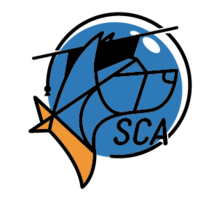

SCA:Guide To Surviving War
| Signal Cartel Academy |
|---|
|  |
{kind=link}
Some time ago there was a large discussion on our forums regarding war decs and their impact on new players/pilots. There were many interesting points raised during this discussion with Sloopy Noopers putting forth the idea for a one-stop resource guide to war decs for beginners. Thus, the idea for the guide was born, which attempts to collect all relevant information into one place for quick and easy reference.
Now after quite a lot of time being knocked around and made fit for purpose, the Signal Cartel Academy (SCA) Admin Team would like to present: The SCA Guide to Surviving War.
This is the first version of this guide and is open to revision and updates as information changes, the needs of the community change, or new tactics and ideas are developed. Although primarily aimed at new players, there may be information which may be of use to some long-term players as well.
In this document Signaleers will find guides to the following:
- What is a war dec?
- Recognising hostiles
- Corp services
- Using alts
- Industrial ships
- Advice on hauling
- Travelling and travel fits
- Third party programs
All sections are bookmarked from the main content page so members will be able to skip to the relevant sections with ease.
Finally, the SCA Admin Team did not attempt to redesign the wheel with this. We have provided links to the relevant sections of EVE University's immense resource (hopefully to save you time googling) and other external links. You will also find links to several threads on the forums and relevant sections of the DII. As previously mentioned, the SCA guide is open to revision so all suggestions and feedback will be welcome.
Thanks, SCA Team
Reference[edit]
Original forum post: SCA Guide To Surviving War